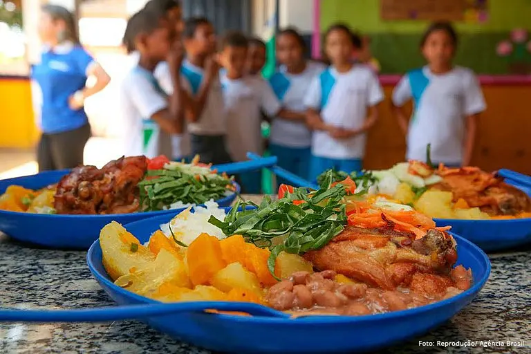
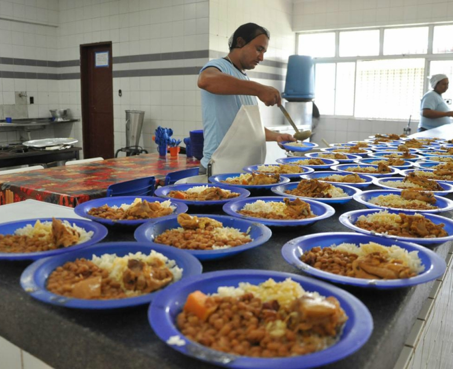

A alimentação nas escolas
É um direito garantido por lei e um pilar fundamental para o crescimento, a saúde e o aprendizado das
crianças e adolescentes.
"Alimentar-se" de direitos humanos nas escolas é um pilar fundamental para construir uma sociedade justa,
consciente e democrática, compreendido sob dois aspectos vitais: a Educação em Direitos Humanos (EDH)
como base da formação cidadã e a garantia do direito básico à alimentação escolar saudável como condição
para o aprendizado.
A principal legislação sobre alimentação escolar no Brasil é a Lei nº 11.947, de 16 de junho de 2009,
que rege o Programa Nacional de Alimentação Escolar (PNAE).
Marco legal central: A Lei nº 11.947/2009 define a alimentação escolar como um dever do Estado.

Direito dos alunos: A alimentação adequada e saudável é garantida a todos os estudantes da educação básica pública (educação infantil, ensino fundamental, ensino médio e educação de jovens e adultos - EJA).
Dever do Estado: O poder público (União, Estados e Municípios) tem a obrigação de garantir refeições que
cubram as necessidades nutricionais dos alunos durante o período letivo.

Os cardápios devem ser planejados por nutricionistas, priorizando alimentos saudáveis, da agricultura familiar e que respeitem a cultura local..